2026
Sensors Completed & Lab-Tested ✅
Both the temperature & humidity sensor and the vibration sensor modules have been successfully tested in the lab. Data is published live via Adafruit IO using MQTT.
HardwareUsing open-source IoT technology to track, protect, and share the story of Malaysia's sea turtles — with everyone.
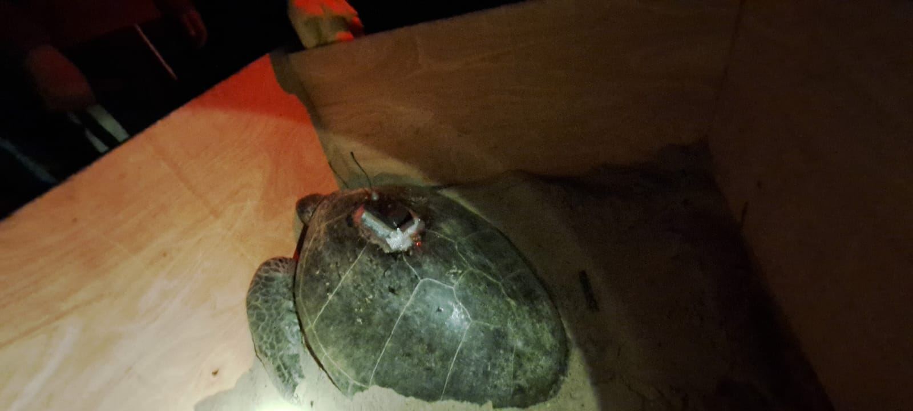
Sea turtles are one of Malaysia's natural heritages — and one of the most vulnerable and endangered species. Malaysia is home to four species: green sea turtles, leatherbacks, olive ridleys, and hawksbills.
While conservation efforts exist, there are critical research gaps and limited knowledge sharing with the public — especially those who contribute to conservation funds.
One major barrier: commercial GPS trackers for adult sea turtles cost thousands of dollars. The Tweeting Turtle Project introduces an open-source tracker at roughly 1/8th the cost, making large-scale monitoring viable and affordable.
By leveraging IoT (Internet of Things) technology with microcontrollers like Arduino and ESP32, we gather real-time data on turtle movements and behaviours — then share it openly through platforms like this website and social media.
Track and investigate internesting sea turtles using open-source GPS trackers and IoT technology to map their movement patterns.
Investigate the reliability and accuracy of the ArduTurtle microcontroller-based sensor system to monitor the turtle hatching process in the field.
Investigate the energetics of hatchlings — from hatching, through emergence, to reaching the sand surface — to better understand survival rates.
Green Sea Turtle
Sabariah is a Green Sea Turtle fitted with the Arribadda Horizon Artic V2 satellite tracking board — one of the open-source trackers at the heart of this project. Her movement data helps researchers understand internesting patterns at a fraction of the traditional cost.
Open-source sensor modules for monitoring turtle hatching in the field.
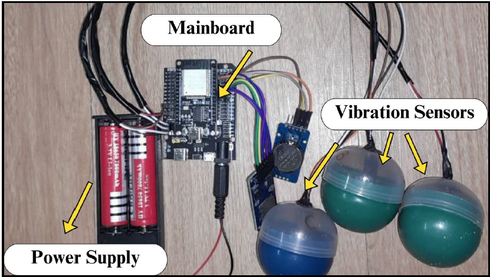


From the beaches of Malaysia — sea turtle conservation in action.
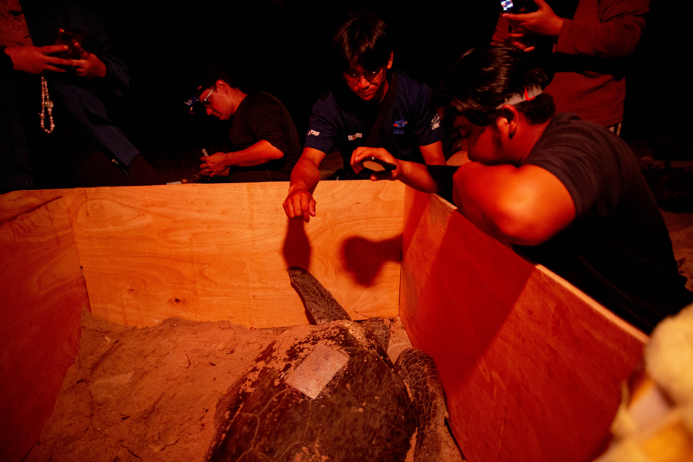
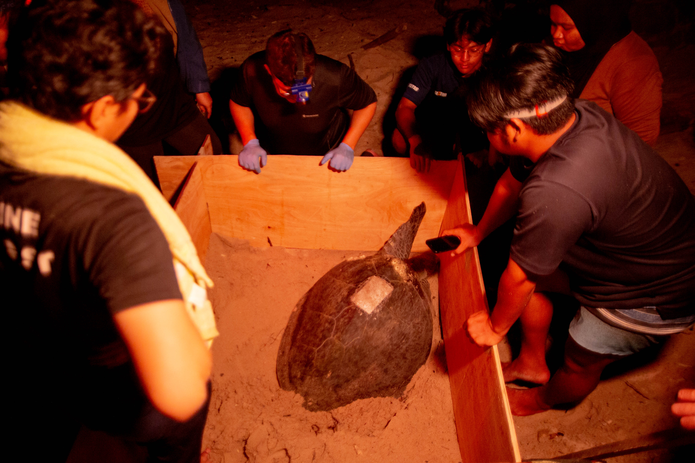
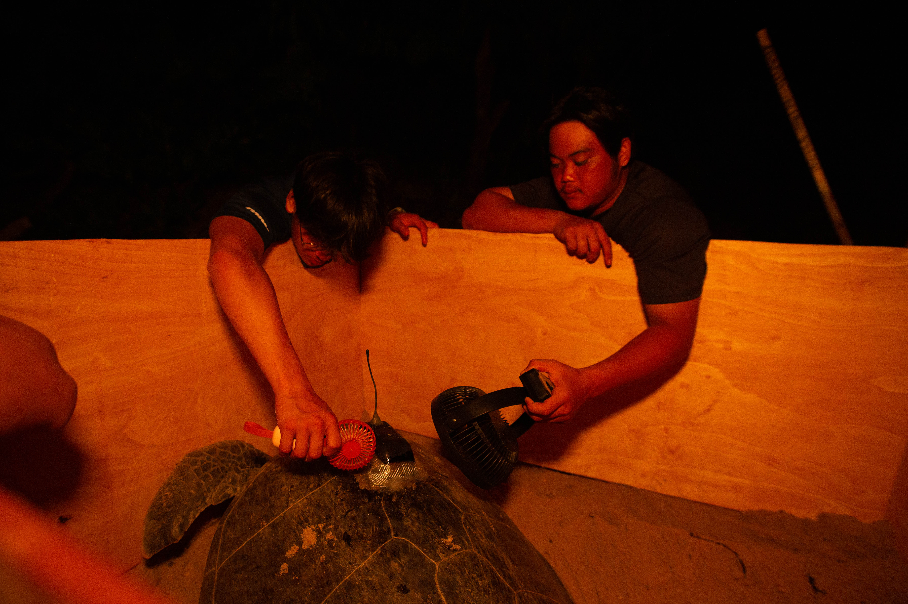
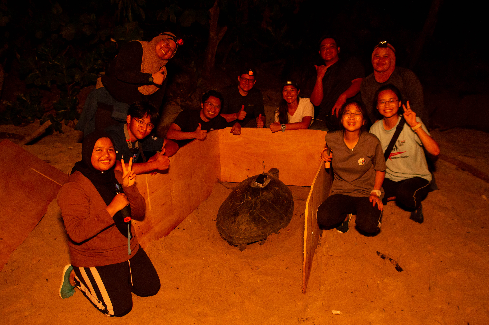
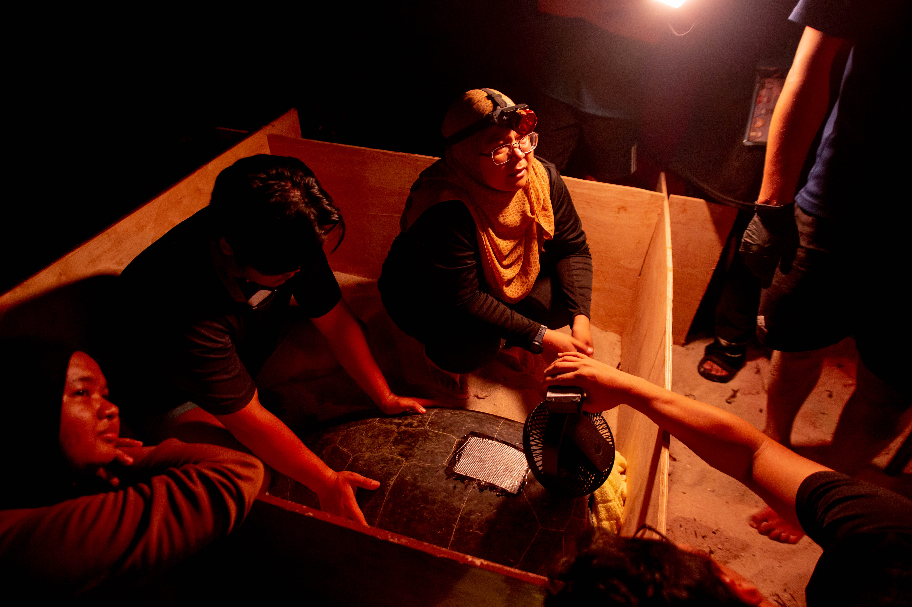
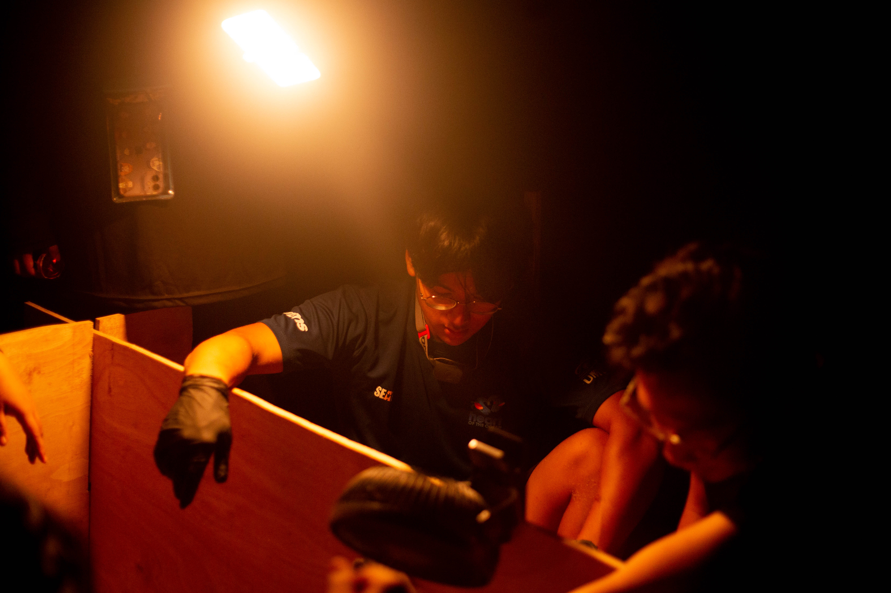
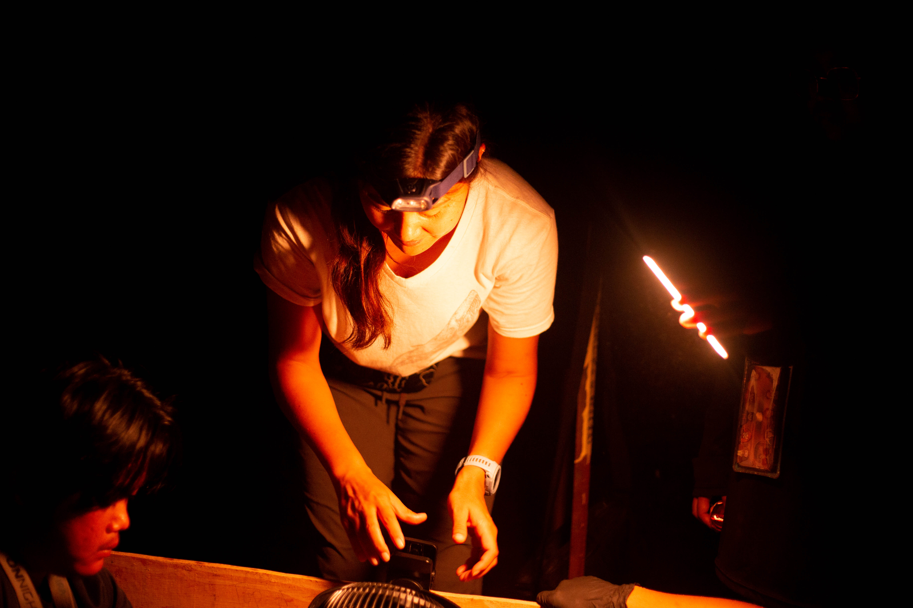
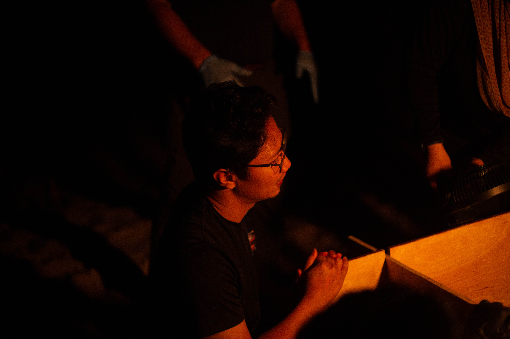
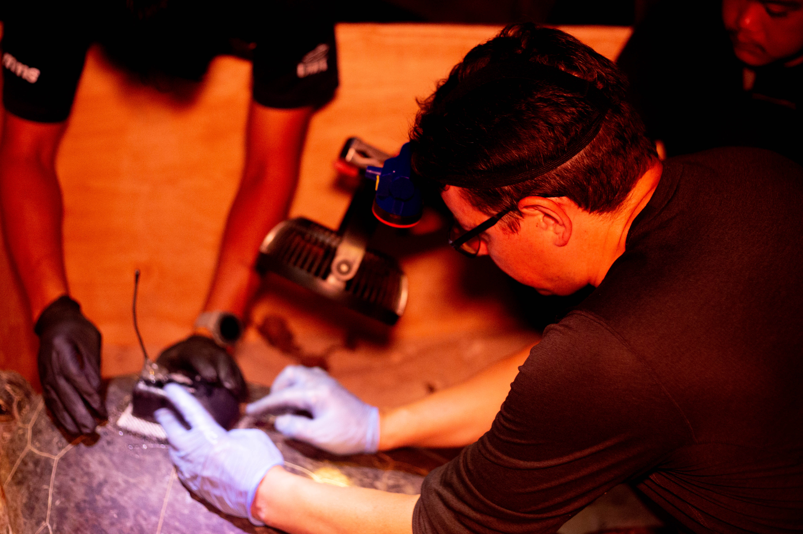
Data streamed live via Adafruit IO from field-deployed sensors.
Both the temperature & humidity sensor and the vibration sensor modules have been successfully tested in the lab. Data is published live via Adafruit IO using MQTT.
HardwareArduTurtle now runs on both the ESP32 Vroom development board and the compact Xiao ESP32 C3 (Seeedstudio) — which includes SD card, OLED display, RTC, and BMS built in.
HardwareOur first tracked individual, Sabariah, is fitted with the Arribadda Horizon Artic V2 board and actively sending satellite data.
TrackingCurrent sensor codes are being prepared for open-source release on GitHub — enabling other researchers to replicate and build on this work.
Open SourceThe researchers and conservationists behind the Tweeting Turtle Project.
Sea Turtle Research Unit — field operations and turtle tagging
United Kingdom — research collaboration and IoT development
UniMAP — sensor engineering and embedded systems
UMT — marine biology and conservation research